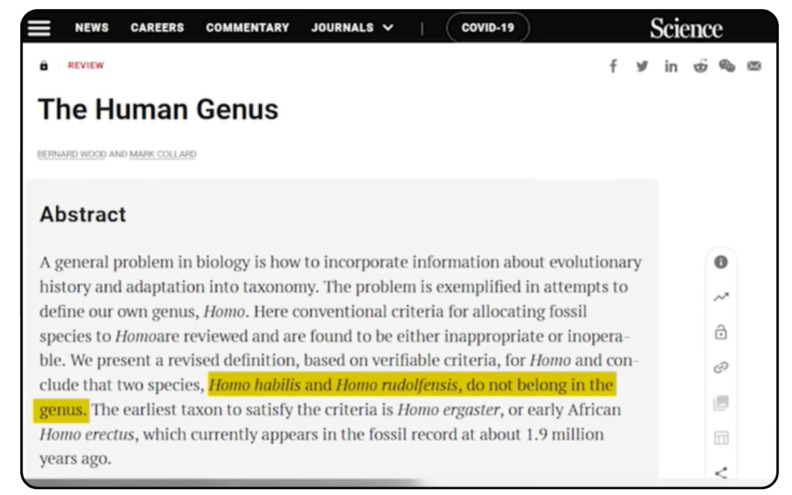

homohabilis
يقول بعض الاشخاص الداعمين للنظريه ان هناك حفريات ليه homohabili هل هذا حقيقه
ولكن اتضح انه احفورات لقرده منقرضه
هذا بحث علمي يوضح ذالك من مجلة سينس
a - https://www.science.org/doi/10.1126/science.284.5411.65

شرح مبسط للنقاط الرئيسية التي يطرحها النص:
1. المشكلة الأساسية في التصنيف يشير النص إلى مشكلة عامة في علم الأحياء وهي كيفية دمج "التاريخ التطوري" و"التكيف" داخل نظام التصنيف (التكسونوميا). هذه المشكلة تظهر بوضوح عند محاولة تعريف جنسنا البشري (Homo).
2. فشل المعايير التقليدية قام الباحثون بمراجعة القواعد والمعايير القديمة التي كان يتم بناءً عليها ضم الحفريات إلى جنس Homo، ووجدوا أنها إما:
غير مناسبة (Inappropriate).
أو غير قابلة للتطبيق عملياً (Inoperable).
3. اقتراح تعريف جديد ونتائج صادمة بناء على معايير جديدة قابلة للتحقق، توصل الباحثون إلى استنتاجات تعيد ترتيب السجل الأحفوري:
استبعاد نوعين Homo habilis (الإنسان الماهر) و Homo rudolfensis لا ينتميان في الحقيقة إلى جنس Homo (يجب إخراجهم منه).
ولذالك يلزم ازالتها من تصنيف homo كما قالت مجلة سينس

يعني با كل اختصار هذه عند العلماء قرود منقرضه وليست سوللة homo
حتى ان العالم الشهير Bernard Wood قال انه ربما لا تصلح لتكون اول مرشح لتكون اول عضو بشري
مصدر:
https://www.youtube.com/watch?si=tBda1PRQC8brb3DB&t=319&v=wmWqojkcJ_8&feature=youtu.be
تى ان العالم الشهير Mark Collard قال انهو يجب ازالتها من جنس homo (البشري) الي الجنس الأوسترالوبيثيكوس (المنقرضه)
مصدر
https://www.youtube.com/live/IZmnWguq7sA?t=2961s
حتى ان العالم Tattersall لم يصِفها كلمة “قرد” صريحة — لكنه قال أن Homo habilis ليس منظمًا تصنيفيًا جيدًا، وأن تصنيفه ضمن Homo غير قابل للدعم القوي.
مصدر
https://www.academia.edu/30420892/Defining_and_Recognizing_the_Genus_Homo?utm_source=app.com
تقول المجلة ان بعد 30 عام من اعتقادنا ان الهموم هبلس حلقه وسيطه تبين انها لا تصلح

معلومه على السريع:
هل تعلم ان ليس هوناك اي احفوريه وسيطه معتمده علميا تثبت ان نظرية التطور صحيح هذا بحث اخر ضع كل المعلومات دون انقاص حرف واحد